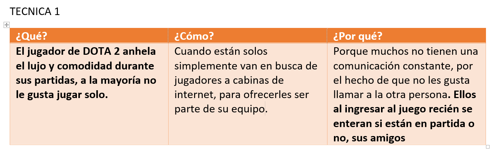
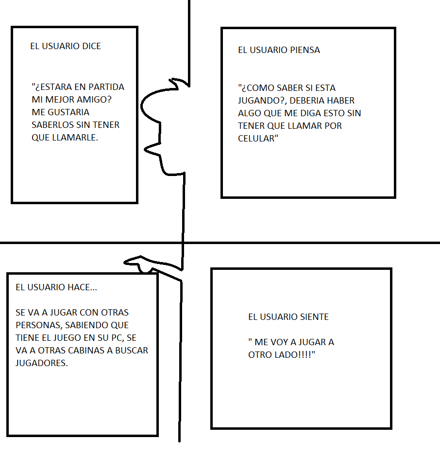
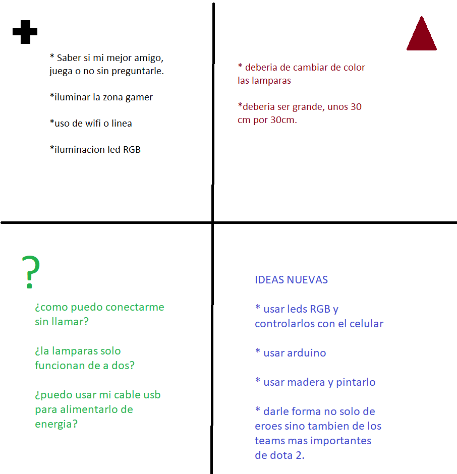

Taller de Design Thinking
En esta segunda parte de la metodología del Design Thinking abarcaremos el segundo objetivo:
Desarrollar empatía con los usuarios, mediante la observación de los mismos. Por lo tanto, es una metodología basada en observar y estudiar las necesidades del usuario.
Etapas de Taller Design Thinking Artiplayer





Descubrir
Sea ha analizado sobre el videojuego dota 2, y su impacto en los jugadores. Ponerse en lugar de ellos nos ha llevado a pensar en que desean tener objetos no solo virtuales como vende la empresa VALVE, sino también tener objetos reales ya sean de adorno o con efectos y diseños especiales. Muchos de los jugadores han comprado diferentes artículos de dota 2, como llaveros y adornos pequeños realizados de goma.
A los consumidores les gusta la comodidad durante el juego y observar máquinas de última generación en los videojuegos, y un buen asiento cómodo, un buen mouse y un teclado de alta gama.
Interpretar
La segunda fase consiste en Interpretar el reto o problema. Es cierto que partíamos de un reto determinado que puede ser más o menos concreto. Sin embargo ese reto era algo a priori, cuando lo establecíamos aún no sabíamos nada o casi nada del usuario para el cual íbamos a realizar nuestro diseño. Tras la fase 1 en la que hemos abierto los ojos y los oídos para comprender a nuestro público objetivo, se hace preciso redefinir ese reto inicial o definir como tal el problema específico para el que vamos a encontrar soluciones.
Idear
Llegados a este punto es donde podemos dejar fluir toda la creatividad del grupo. Como he comentado al principio es muy importante no dar soluciones o ideas a nuestro reto hasta que no llega este momento, en el que ya tenemos perfectamente definido el punto de vista del usuario.
-Crear muebles en forma del personaje con efectos luminosos
-Crear lámparas que mande una señal de que el jugador esta en partida
-Hacer personajes de madera
-Usar lámparas
-Usar arduino
-Podeos usar WIFI como señal
-También podemos usar una línea telefónica, como claro, movistar,etc.
Experimentar
Cuando hemos seleccionado las ideas hay que hacerlas tangibles, es decir, realizar un prototipo de cada una. Lo importante es que este primer prototipo sea lo más sencillo posible y no suponga un coste elevado, ni implique demasiado tiempo en su desarrollo.
Evolucionar
Nuestro proyecto final se terminará completamente según las críticas de los usuarios de un producto prueba, realizaremos o pondremos a prueba nuestro producto para ver qué cosas podemos mejorar y evolucionarlas para lograr una satisfacción al 100 % del usuario.Responderemos preguntas como:
Esta sería la fase final de esta metodología. Una vez llegados a este punto, se debe entregar el prototipo de la idea seleccionada al cliente o usuario para comprobar si realmente resolvemos su problema.
Una vez analizado el prototipo y recibido el feedback del cliente, es cuando nos damos cuenta de si hemos entendido realmente al usuario. A raíz de esto debemos decidir si el prototipo es válido para empezar con su desarrollo o si es necesario modificarlo.
¿Qué tal sí….?
¿me gusta, pero….?
¿mejoramos esto….?
¿cuesta mucho fabricarlos, podemos cambiar algo para que sea más económico?
¿usamos otro material…?
Material Semilla
Video que explica nuestro material semilla.
Por ende se definió no un problema sino un gusto por el juego, algo que debemos aprovechar puesto que estos consumidores presentan un buen marketing, por ende se hizo productos basados en la tematica del juego.